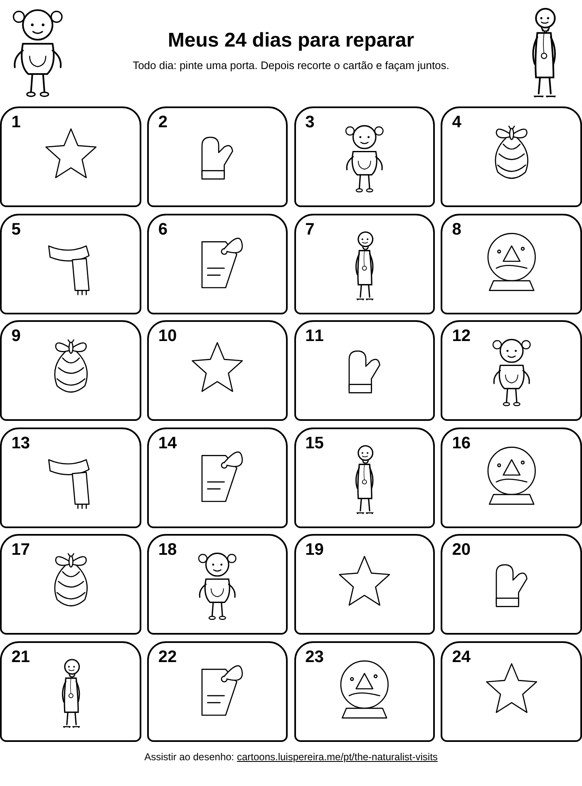

Calendário do advento para crianças para imprimir grátis – 24 dias para reparar
Calendário do advento grátis para imprimir com Mira e o Sr. Pluma. 24 portas e 24 coisinhas para reparar. PDF em A4 e Carta para casa ou escola.
Começa em 1º de dezembro. Imprima agora!
Uma folha de calendário e 24 cartões para recortar, com linhas pretas para colorir.
Olhe para cima. Quantas luzes você vê?
Procure algo macio. Toque com um dedo.
Escute. Qual é o som mais baixinho?
Procure algo redondo nesta sala.
Qual é a coisa mais comprida que você acha?
Pinte um desenho de inverno. Coloque um detalhe bem pequeno.
Desenhos para colorirNão se mexa. O que se mexe perto de você?
Olhe pela janela. O que mudou desde ontem?
Procure algo cheio de bolinhas. Desenhe as bolinhas.
Procure uma forma parecida com uma estrela.
Olhe suas mãos. Repare numa linha bem fininha.
Brinque de eu vejo, eu vejo. Ache três coisas pequenas.
Jogar eu vejo, eu vejoProcure duas coisas da mesma cor.
Agradeça por uma coisa pequena.
Ande devagar. No que você repara no chão?
Procure algo brilhante. O que você vê nele?
Cheire duas coisas. De qual você gosta mais?
Feche os olhos e escute uma história.
Ouvir a históriaProcure a menor coisa que você consegue ver.
Procure algo quentinho. Procure algo gelado.
Olhe os sapatos de um adulto. No que você repara?
Faça uma etiqueta para alguém. Desenhe o que a pessoa ama.
Olhe o céu. Que forma têm as nuvens?
Assistam juntos: O Naturalista Visita.
Assistir agora

Quem são Mira e o Sr. Pluma?
Mira é curiosa. O Sr. Pluma ajuda a ir devagar e reparar nas coisas pequenas. Assistam juntos ao desenho animado grátis.